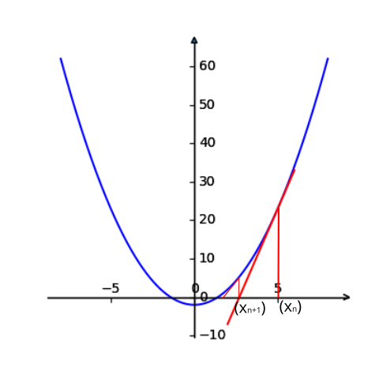

优化算法--牛顿迭代法
牛顿法给出了任意方程求根的数值解法，而最优化问题一般会转换为求函数之间在”赋范线性空间”的距离最小点，所以，利用牛顿法去求解任意目标函数的极值点是个不错的思路。
方程求根
对于一元二次方程，求根其实很简单，只要套用求根公式就行了，但找到一个方程的求根公式（解析解）其实是很困难的，可以证明5次方程以上便没有解析解了，参考维基百科五次方程。其他的复杂方程如偏微分方程求解更是超级困难。好在随着计算机技术的发展，解析解变的不再那么重要（至少是在工程上），取而代之的方法便是数值解法，牛顿法便是众多数值解法中的一个。
数值法求解又叫做数值分析，主要利用逼近的思想来使数值解通过迭代计算不断接近解析解，而得出来得解就叫做数值解，在工程上，数值解只要是在精度要求范围内满足方程便是有用的。
牛顿迭代法

先考虑一个小问题：求解方程的根，也即求解。牛顿迭代法的思想从几何的角度很好理解，如上图所示（画图的脚本在这里）方程的根就是函数与轴的交点处横坐标的值。从图中点出发，计算函数在点处的切线，再计算切线和轴的交点得到，再计算函数在点处的切线… 一直这样迭代下去，可以发现会越来越接近方程的根。
上述思路的数学表达：
由计算
得到切线方程：
切线和轴的交点，也即，当时，
当时，
由，得到：
令，继续迭代，则得到迭代公式：
推导过程还可以从函数泰勒展开的角度去理解，这在很多博客里有写，这里就不赘述了。
根据上面的迭代公式，可以计算方程的根了：
- 猜一个初始值，因为根大概是1点多吧，那就给个好了；
- 计算：
算法优缺点分析
牛顿法的优点当然就是提供了一种方程求根的数值解方法。而缺点也有几点：
- 首先算法是要求函数处处可导的，如果对于优化问题还需要导函数连续（因为要求处处存在二阶导数），否则算法就不能计算函数的根了，比如就不能收敛，虽然函数的根为0，但是它在0处的导数是不存在的；
- 求出的解可能仅仅是众多解中的一个，这个比较依赖于初始值的选取，比如上面的问题，初始值为2，则收敛到了方程的正数解，要想得到负数解，则需要将初始值选在负数中，现实中的问题，很难去估计解的大小范围；
- 如果初始的估计值与根的距离太远收敛就会变的比较慢；
- 要求每次迭代是得到的切线导数不能为0，如推导过程所示；
- 如果方程本来就没有根，那牛顿法是不能收敛的；
优化问题求解
优化问题从泛函的角度理解起来，就是计算函数之间的距离最小。对于距离的定义有很多，比较常用的是二范数，使二范数距离最小的求解过程就叫做最小二乘。对于这样的线性问题（非线程问题可以通过泰勒展开转换成线性问题），可以定义距离为，为了求距离最小值点，需要先求极值点，问题便转换为求解的根，这时候牛顿法便派上了用场。与之前问题不同的是，这里需要求的导数，也即求解，也即Hessian矩阵。假设，此处的参数是n维向量，则Hessian矩阵为：
所以，牛顿法求解最优化问题，需要先求目标函数的Jacobian矩阵和Hessian矩阵，计算量比较大的便是计算Hessian矩阵了，因为二阶导计算量成指数增长。
注意，这里若二阶导数是连续的，则$H$是对称矩阵。
算法步骤
步骤1： 给定误差阈值，初始模型（也可以给定迭代次数）；
步骤2： 计算梯度，若，停止计算，输出;
步骤3： 计算Hessian矩阵，计算;
步骤4： 令，k=k+1，转到第2步。
示例&代码
例子：求极小值:
主要代码如下所示，完整代码请查看这里1
2
3
4
5
6
7
8
9
10
11
12
13
14
15
16
17
18while ((k < n) or np.sqrt(np.power(gk[0,0],2)+np.power(gk[1,0],2))) > e:
#向前差分计算一阶导
gk[0,0] = 1/m1stp*(func(m1+m1stp,m2)-func(m1,m2))
gk[1,0] = 1/m2stp*(func(m1,m2+m2stp)-func(m1,m2))
#向前差分计算海森矩阵,注意：以函数为二阶导连续为前提
Gk[0,0] = 1/m1stp*(func(m1+m1stp,m2)-2*func(m1,m2)+func(m1-m1stp,m2))
Gk[0,1] = 1/(m1stp*m2stp)*(func(m1+m1stp,m2+m2stp)-func(m1,m2+m2stp)-func(m1+m1stp,m2)+func(m1,m2))
Gk[1,0] = Gk[0,1]
Gk[1,1] = 1/m2stp*(func(m1,m2+m2stp)-2*func(m1,m2)+func(m1,m2-m2stp))
dk = Gk.I*gk
#修正模型
m1 = m1-dk[0,0]
m2 = m2-dk[1,0]
k = k+1
几个改进方法
优化算化考虑重点包括算法的通用性、有效性、收敛性、效率，当然，这些都包括在时间复杂度和空间复杂度中。牛顿法存在几个问题需要考虑一下：
- 计算Hessian矩阵太耗资源和时间了；
- 牛顿法不稳定，只有正定时才收敛，也即要求目标函数的 Hessian 阵 在每个迭代点 处是正定的，否则难以保证牛顿法收敛的方向，实际上，很可能是一个病态/奇异矩阵；
- 初始模型很重要，选的不好会迭代很多次，收敛比较慢；
- 初始模型的选取不在最小值附近，很容易让结果陷入局部极小值。
对此，大牛们提出了一些改进的方法：
拟牛顿法：为了避免计算Hessian矩阵，不直接计算，而是构造一个矩阵来近似，需要一直正定并且更新起来比较简单，此处可以查看相关文献，不赘述了；
高斯牛顿法：将目标函数变换为，其中表示残差（residual），则根据chain rule，可以得到：
这里令，若对于将要迭代的值，有则；这样的话就不需要计算Hessian矩阵了。这个想法不错，当和极值点/最小值的距离比较近时，简直完美；但是，当初始值距离最小值较远时，的思路就不行了，此时，高斯-牛顿法并不收敛。
所以高斯-牛顿法也是极度依赖初始模型/初值的选取的
- 莱文贝格－马夸特方法(Levenberg–Marquardt algorithm)：该方法结合了高斯-牛顿法和最速下降法/梯度法，因为高斯-牛顿法比较依赖初始模型/初值，梯度法可以克服这个问题；而梯度法收敛速度要低于高斯-牛顿法，所以该方法能提供数非线性最小化（局部最小）的数值解。其实做法也很简单，就是在目标函数内加了一个参数，所以该方法也叫做阻尼最小二乘法。类似的做法在Tikhonov正则化中也出现了。
所有这些方法都可能陷入局部极小值，而非找到全局极小值/最小值。要想克服这个问题，就需要启发式/非线性优化算法了。
Reference
- Calculus- where Newton’s method fail
- Newton’s Method
- 马昌凤, 《最优化方法及其 Matlab 程序设计》